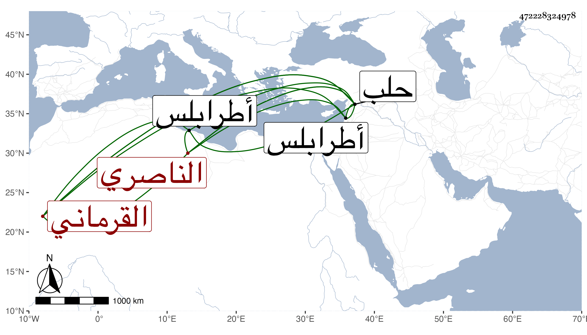

0902Sakhawi.DawLamic.ITO20230111-ara1.EIS1600.472228324978
Biography ID: 472228324978
1078
سودون القرماني الناصري فرج . خدم بعد أستاذه بأبواب الأمراء ثم صار خاصكيا في دولة الظاهر ططر ثم ساقيا في أول أيام الظاهر جقمق ثم أمره عشرة ثم قدمه بحلب ثم صار أتابكها في أيام الأشرف ثم نقله إلى أتابكية طرابلس ثم أعيد إلى أتابكية حلب وتوجه أميرا على الركب الحلبي فمات في شوال سنة ثلاث وستين .
